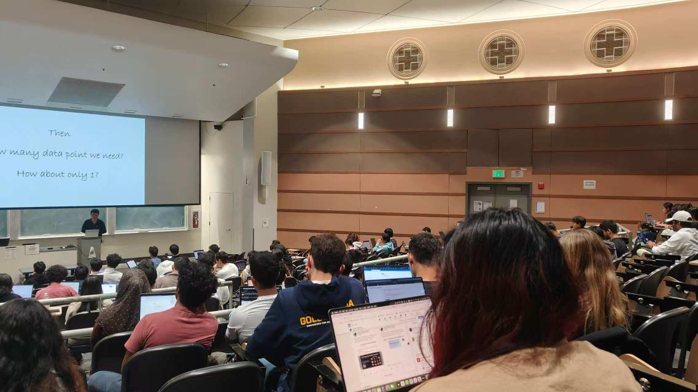
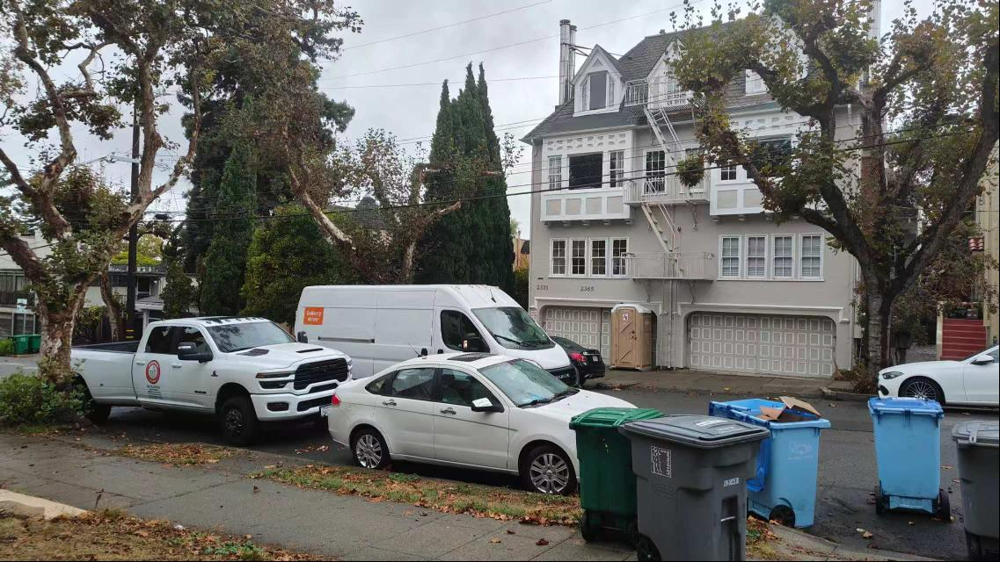
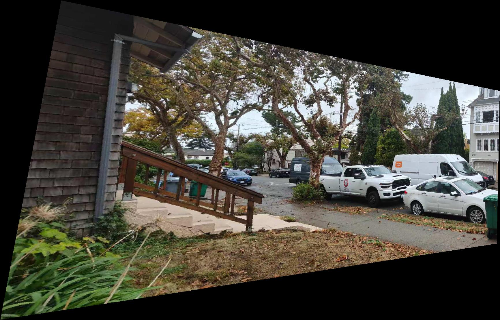
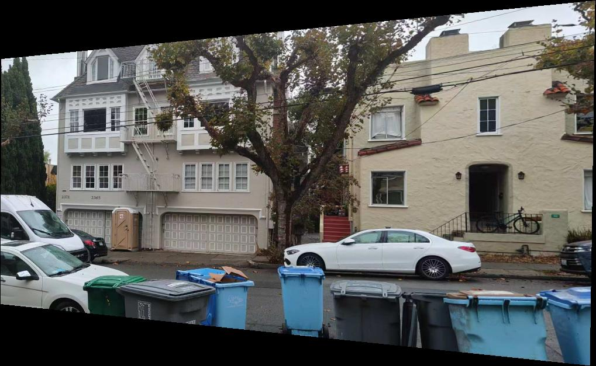
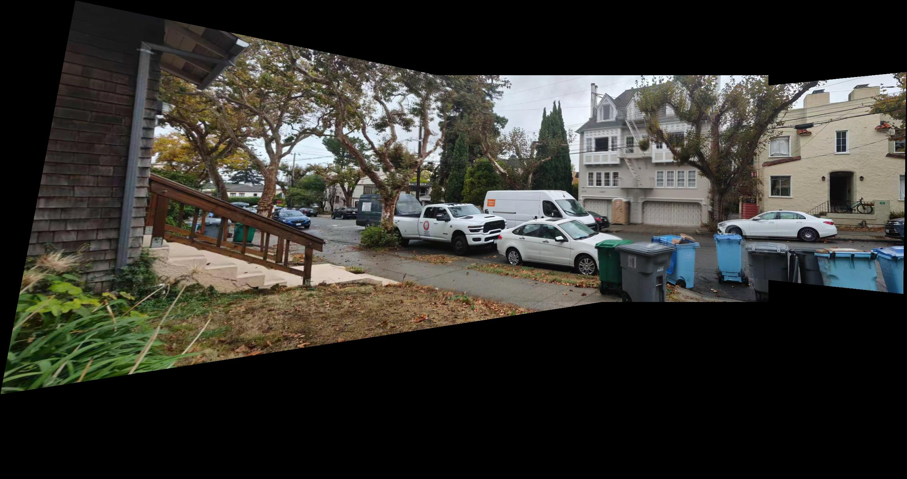
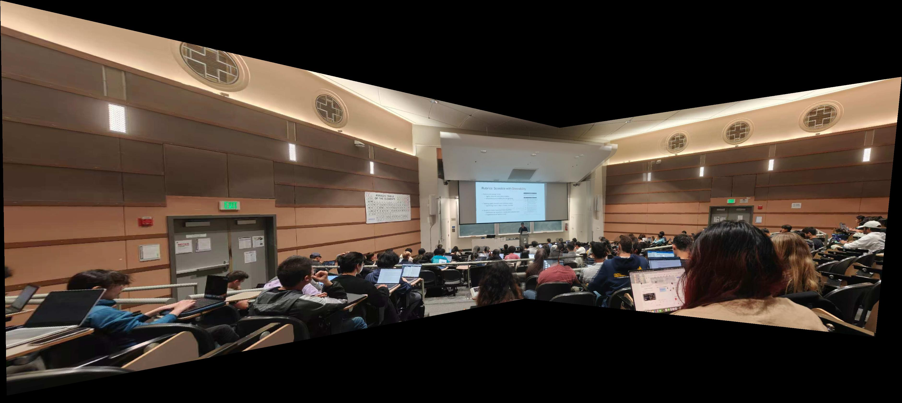
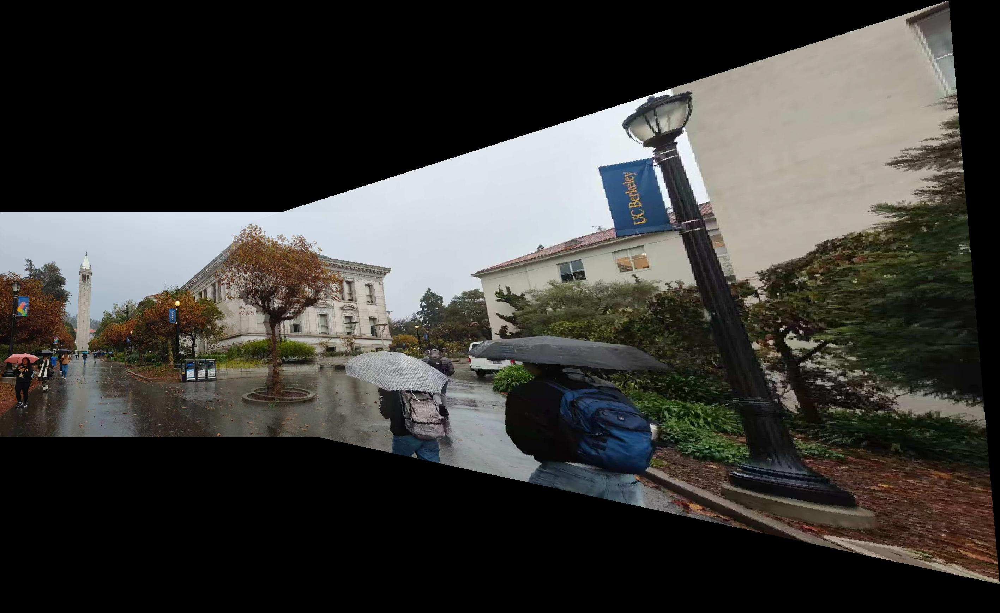

Part A: Image Warping and Mosaicing
Part A.1: Shoot the Pictures
Description: Take two or more pictures with a projective transformation (perspective transformation) between them. The most common approach is to fix the center of projection (COP) and rotate the camera to take the photos.
My approach: I took multiple photos of the same scene, keeping the camera position roughly fixed and only changing the shooting angle to obtain image pairs with projective transformation relationships. This ensures that there is the required perspective transformation relationship between the images.
Results: The following shows examples of the images I captured.


Description: Take two or more pictures with a projective transformation (perspective transformation) between them. The most common approach is to fix the center of projection (COP) and rotate the camera to take the photos.
My approach: I took multiple photos of the same scene, keeping the camera position roughly fixed and only changing the shooting angle to obtain image pairs with projective transformation relationships. This ensures that there is the required perspective transformation relationship between the images.
Results: The following shows examples of the images I captured.
Image 1
Image 2
Image 3
Image 1
Image 2

Image 3
Part A.2: Recover Homographies
Description: Before aligning images, you need to recover the transformation parameters between each pair of images. In our case, the transformation is a homography: p'=Hp, where H is a 3x3 matrix with 8 degrees of freedom (the lower right corner is a scaling factor that can be set to 1).
My approach: Implemented the computeH function to calculate the homography matrix H through n corresponding point pairs. Using linear system solving method, the problem is transformed into the form Ah=b, where h is a vector of 8 unknown entries of H. When n>4, the system is overdetermined, and the least squares method is used to solve it.
Main code:
Results: Example of homography matrix obtained by this function:
[[ 1.05280819e+00 8.95665586e-02 -2.70773387e+01]
[-8.27119946e-02 1.05850720e+00 -2.57703311e+01]
[-7.77872637e-05 3.13425327e-04 1.00000000e+00]]
Description: Before aligning images, you need to recover the transformation parameters between each pair of images. In our case, the transformation is a homography: p'=Hp, where H is a 3x3 matrix with 8 degrees of freedom (the lower right corner is a scaling factor that can be set to 1).
My approach: Implemented the computeH function to calculate the homography matrix H through n corresponding point pairs. Using linear system solving method, the problem is transformed into the form Ah=b, where h is a vector of 8 unknown entries of H. When n>4, the system is overdetermined, and the least squares method is used to solve it.
Main code:
Show Code
def computeH(im1_pts, im2_pts):
n = im1_pts.shape[0]
A = np.zeros((2*n, 8))
b = np.zeros((2*n, 1))
for i in range(n):
x, y = im1_pts[i]
u, v = im2_pts[i]
A[2*i, 0:2] = [x, y] # h11*x + h12*y
A[2*i, 2] = 1 # h13
A[2*i, 6:8] = [-u*x, -u*y] # -h31*u*x - h32*u*y
b[2*i] = u # = u
A[2*i+1, 3:5] = [x, y] # h21*x + h22*y
A[2*i+1, 5] = 1 # h23
A[2*i+1, 6:8] = [-v*x, -v*y] # -h31*v*x - h32*v*y
b[2*i+1] = v # = v
h = np.linalg.lstsq(A, b, rcond=None)[0]
H = np.array([
[h[0, 0], h[1, 0], h[2, 0]],
[h[3, 0], h[4, 0], h[5, 0]],
[h[6, 0], h[7, 0], 1]
])
return H
Part A.3: Warp the Images
Description: Knowing the parameters of the homography transformation, you can use this homography matrix to transform each image toward the reference image. Two interpolation methods were implemented: nearest neighbor interpolation and bilinear interpolation.
My approach: Implemented the warpImage function, supporting two interpolation methods. Using inverse transformation (to avoid holes in the output image), calculating the bounding box of the output image, and then performing inverse transformation for each pixel to find the corresponding position in the source image.
Main code:
Results: The following shows the results of image transformation using two interpolation methods.


Description: Knowing the parameters of the homography transformation, you can use this homography matrix to transform each image toward the reference image. Two interpolation methods were implemented: nearest neighbor interpolation and bilinear interpolation.
My approach: Implemented the warpImage function, supporting two interpolation methods. Using inverse transformation (to avoid holes in the output image), calculating the bounding box of the output image, and then performing inverse transformation for each pixel to find the corresponding position in the source image.
Main code:
Show Code
def warpImage(im, H, method='bilinear'):
if len(im.shape) == 3:
h, w, c = im.shape
else:
h, w = im.shape
c = 1
im = im[:, :, np.newaxis]
corners = np.array([[0, 0, 1], [w-1, 0, 1], [0, h-1, 1], [w-1, h-1, 1]]).T
warped_corners = H @ corners
warped_corners = warped_corners / warped_corners[2, :]
min_x = np.floor(np.min(warped_corners[0, :])).astype(int)
max_x = np.ceil(np.max(warped_corners[0, :])).astype(int)
min_y = np.floor(np.min(warped_corners[1, :])).astype(int)
max_y = np.ceil(np.max(warped_corners[1, :])).astype(int)
out_w = max_x - min_x + 1
out_h = max_y - min_y + 1
warped_im = np.zeros((out_h, out_w, c), dtype=im.dtype)
H_inv = np.linalg.inv(H)
for y_out in range(out_h):
for x_out in range(out_w):
x_warp = x_out + min_x
y_warp = y_out + min_y
warp_point = np.array([x_warp, y_warp, 1])
src_point = H_inv @ warp_point
src_point = src_point / src_point[2]
x_src, y_src = src_point[0], src_point[1]
if 0 <= x_src < w-1 and 0 <= y_src < h-1:
if method == 'nearest':
x_near = int(round(x_src))
y_near = int(round(y_src))
warped_im[y_out, x_out, :] = im[y_near, x_near, :]
else: # bilinear
x_floor, y_floor = int(np.floor(x_src)), int(np.floor(y_src))
x_ceil, y_ceil = x_floor + 1, y_floor + 1
dx = x_src - x_floor
dy = y_src - y_floor
p1 = im[y_floor, x_floor, :]
p2 = im[y_floor, x_ceil, :]
p3 = im[y_ceil, x_floor, :]
p4 = im[y_ceil, x_ceil, :]
warped_im[y_out, x_out, :] = (
(1-dx)*(1-dy)*p1 +
dx*(1-dy)*p2 +
(1-dx)*dy*p3 +
dx*dy*p4
)
if c == 1:
warped_im = warped_im[:, :, 0]
plt.imshow(warped_im)
plt.show()
return warped_im, (min_x, min_y, max_x, max_y)
def warpImageNearestNeighbor(im, H):
return warpImage(im, H, method='nearest')
def warpImageBilinear(im, H):
return warpImage(im, H, method='bilinear')

Nearest Neighbor Interpolation
Bilinear Interpolation

Nearest Neighbor Interpolation
Bilinear Interpolation
Nearest Neighbor Interpolation

Bilinear Interpolation
Part A.4: Blend Images into a Mosaic
Description: Fuse the transformed images to create an image mosaic. Alpha blending is used to achieve seamless stitching.
My approach: Implemented the create_mosaic function, which transforms and aligns multiple images according to the calculated homography matrices, and then uses alpha blending technique to fuse them into a seamless panoramic image. The alpha value is calculated based on the distance from the center of the image to achieve smooth transition.
Main code:
Results: The following shows the image mosaic results generated using two interpolation methods.


Description: Fuse the transformed images to create an image mosaic. Alpha blending is used to achieve seamless stitching.
My approach: Implemented the create_mosaic function, which transforms and aligns multiple images according to the calculated homography matrices, and then uses alpha blending technique to fuse them into a seamless panoramic image. The alpha value is calculated based on the distance from the center of the image to achieve smooth transition.
Main code:
Show Code
def create_mosaic(images, homographies, method='bilinear'):
global cnt
global group
if len(images) != len(homographies) + 1:
raise ValueError("Number of homographies should be one less than number of images")
base_im = images[0]
mosaic = base_im.copy().astype(np.float32)
alphas = []
for i, im in enumerate(images):
h, w = im.shape[:2]
alpha = np.ones((h, w))
center_y, center_x = h//2, w//2
y_coords, x_coords = np.ogrid[:h, :w]
dist_from_center = np.sqrt((x_coords - center_x)**2 + (y_coords - center_y)**2)
max_dist = np.sqrt(center_x**2 + center_y**2)
alpha = 1 - dist_from_center / max_dist
alpha = np.clip(alpha, 0, 1)
alphas.append(alpha)
warped_images = []
warped_alphas = []
bboxs = []
min_x, min_y = 0, 0
max_x, max_y = base_im.shape[:2]
for i in range(len(images)):
if i == 0:
H = np.eye(3)
else:
H = homographies[i-1]
if method == 'nearest':
warped_im, bbox = warpImageNearestNeighbor(images[i], H)
warped_alpha, _ = warpImageNearestNeighbor(alphas[i], H)
cnt += 1
plt.imsave('./results/'+ group + '_' + str(cnt) + '_warped_nearest.jpg', warped_im.astype(np.uint8))
plt.imsave('./results/'+ group + '_' + str(cnt) + '_alpha_nearest.jpg', warped_alpha)
else:
warped_im, bbox = warpImageBilinear(images[i], H)
warped_alpha, _ = warpImageBilinear(alphas[i], H)
cnt += 1
plt.imsave('./results/'+ group + '_' + str(cnt) + '_warped_bilinear.jpg', warped_im.astype(np.uint8))
plt.imsave('./results/'+ group + '_' + str(cnt) + '_alpha_bilinear.jpg', warped_alpha)
warped_images.append(warped_im)
warped_alphas.append(warped_alpha)
x1, y1, x2, y2 = bbox
bboxs.append(bbox)
min_x = min(min_x, x1)
min_y = min(min_y, y1)
max_x = max(max_x, x2)
max_y = max(max_y, y2)
h, w = max_y - min_y + 1, max_x - min_x + 1
mosaic = np.zeros((h, w, 3), dtype=np.float32)
total_alpha = np.zeros((h, w), dtype=np.float32)
for i in range(len(images)):
x1, y1, x2, y2 = bboxs[i]
mosaic[-min_y+y1:-min_y+y2+1, -min_x+x1:-min_x+x2+1] += warped_images[i][:] * warped_alphas[i][:, :, np.newaxis]
total_alpha[-min_y+y1:-min_y+y2+1, -min_x+x1:-min_x+x2+1] += warped_alphas[i][:]
mosaic /= total_alpha[:, :, np.newaxis] + 1e-8 # Prevent division by zero
return np.clip(mosaic, 0, 255).astype(np.uint8)
Nearest Neighbor Interpolation Mosaic

Bilinear Interpolation Mosaic

Nearest Neighbor Interpolation Mosaic
Bilinear Interpolation Mosaic

Nearest Neighbor Interpolation Mosaic
Bilinear Interpolation Mosaic
Nearest Neighbor Interpolation Mosaic
Bilinear Interpolation Mosaic
Nearest Neighbor Interpolation Mosaic
Bilinear Interpolation Mosaic
Part A.5: Summary
Project completion status:
1. Implemented the homography matrix calculation function computeH
2. Implemented two interpolation methods: nearest neighbor interpolation and bilinear interpolation
3. Completed the image rectification function
4. Completed the image stitching function
5. Used Alpha blending technology to achieve seamless stitching
Problems encountered and solutions:
1. During image transformation, boundary processing is a key issue. By calculating the bounding box of the transformed image, all content is ensured to be included.
2. When stitching images, direct stitching produces obvious seams. By using Alpha blending technology, the mixing weight is determined according to the pixel distance from the center of the image, achieving smooth transition.
3. Coordinate system conversion needs to be handled correctly during inverse transformation to ensure accurate pixel position mapping.
Comparison of two interpolation methods:
The nearest neighbor interpolation method is simple and fast, but produces jagged edges and lower image quality.
The bilinear interpolation method has slightly higher computational complexity, but can produce smoother image effects and higher quality.
In practical applications, bilinear interpolation is a better choice.
Project completion status:
1. Implemented the homography matrix calculation function computeH
2. Implemented two interpolation methods: nearest neighbor interpolation and bilinear interpolation
3. Completed the image rectification function
4. Completed the image stitching function
5. Used Alpha blending technology to achieve seamless stitching
Problems encountered and solutions:
1. During image transformation, boundary processing is a key issue. By calculating the bounding box of the transformed image, all content is ensured to be included.
2. When stitching images, direct stitching produces obvious seams. By using Alpha blending technology, the mixing weight is determined according to the pixel distance from the center of the image, achieving smooth transition.
3. Coordinate system conversion needs to be handled correctly during inverse transformation to ensure accurate pixel position mapping.
Comparison of two interpolation methods:
The nearest neighbor interpolation method is simple and fast, but produces jagged edges and lower image quality.
The bilinear interpolation method has slightly higher computational complexity, but can produce smoother image effects and higher quality.
In practical applications, bilinear interpolation is a better choice.